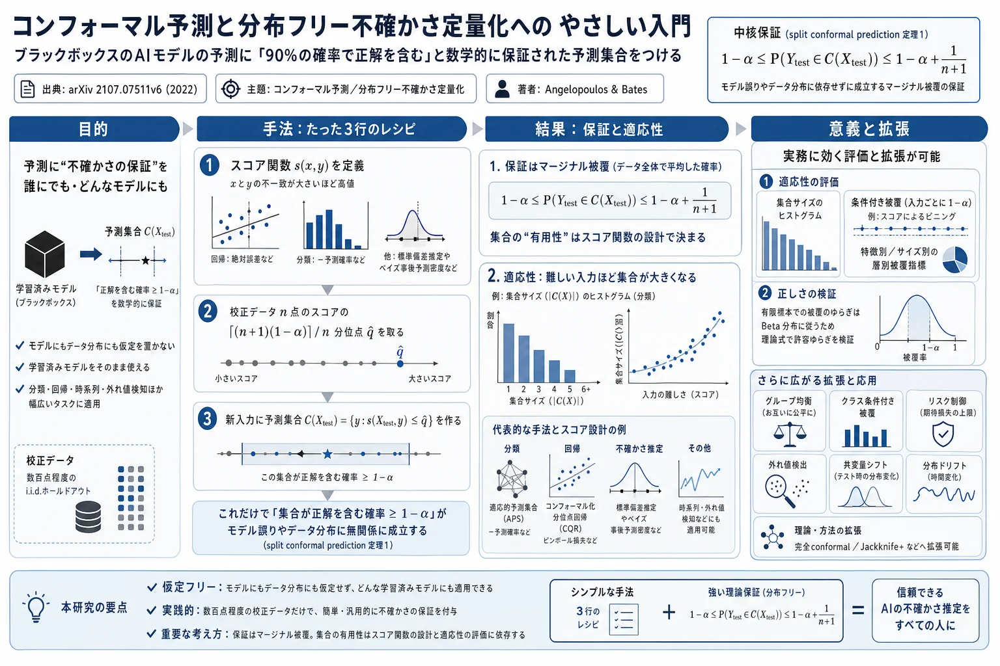
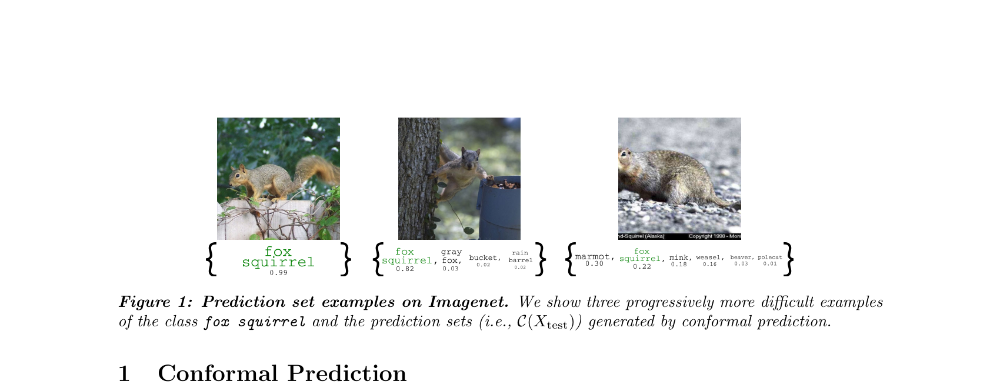

コンフォーマル予測と分布フリー不確かさ定量化への やさしい入門

<!-- 方針: ほぼ全訳＋必要に応じた補足。原文（英語・arXivチュートリアル、51頁）構成に沿って訳出。中核（1〜3章）は数式・Pythonコードを保ちつつ詳訳し、拡張・実例・理論（4〜7章・付録A-D）は全項目を漏らさず要点全訳。数式はKaTeXで再構成(1ブロック1式)。図1(Imagenet予測集合例)はPyMuPDFで抽出。本文の[N]は原文の番号引用に対応。原著は自己完結の教科書的文書で参考文献は多数——主要文献を末尾に列挙(全リストは原著参照)。「> 補足:」は訳者注。 -->
書誌情報
- 原題: A Gentle Introduction to Conformal Prediction and Distribution-Free Uncertainty Quantification
- 著者: Anastasios N. Angelopoulos・Stephen Bates
- 出典: arXiv:2107.07511v6 [cs.LG], 2022年12月7日
- 種別: チュートリアル／実践的入門（教科書的文書。各手法にPythonコードとJupyterノートブックが付属）
- インパクトファクター: 該当なし（arXivプレプリント。ただし本分野で極めて広く参照される標準的入門）
補足: 本稿は、機械学習（AI）モデルの予測に 数学的に保証された「不確かさ」 を付ける手法「コンフォーマル予測（conformal prediction）」の、実務者向けの決定版入門である。中身は、AIが「これはキツネリス（fox squirrel）です、確率99%」と出したとき、その確率が信用できるか分からない——という問題を、「90%の確率で正解を含む“予測集合”」を作ることで解決する。驚くべきは、モデルがどんなに間違っていても、データの分布に何の仮定を置かなくても、この保証が成り立つこと（＝分布フリー、distribution-free）。学習済みモデルをそのまま使え、追加のコードは数行で済む。日本の読者（本サイトの主題である漢方・生薬QCの文脈）には、「分析モデルやAIの予測に“統計的に正しい誤差範囲（予測区間）”を後付けする、汎用の不確かさ定量化フレームワーク」 と考えると位置づけが分かりやすい。分析法バリデーション（別掲のRozet論文）が扱う「予測区間・被覆確率」と発想が地続きで、QC/分析予測の信頼性保証に応用しうる。専門用語を下に整理する。
用語の整理（訳者による前置き）
- コンフォーマル予測（conformal prediction）＝任意のモデルに対し、ユーザ指定の確率で真値を含む「予測集合（分類）」「予測区間（回帰）」を作る手法。
- 分布フリー（distribution-free）＝データ分布やモデルの正しさを仮定しない。保証は 非漸近的（non-asymptotic）＝有限のnで厳密に成り立つ。
- マージナル被覆（marginal coverage）＝校正・テスト点のランダム性で平均した被覆確率が 1−α 以上。条件付き被覆（conditional coverage）＝各入力 x ごとに被覆 1−α 以上（より強い性質で一般には達成不能）。
- スコア関数 s(x,y)（conformal score / nonconformity score）＝x と y の「不一致の大きさ」。大きいほどモデルとデータが合わない。
- 校正データ（calibration data）＝学習に使っていない i.i.d. のホールドアウト（数百点）。q̂＝校正スコアの ⌈(n+1)(1−α)⌉/n 分位点。
- split conformal prediction＝校正データを分けて使う最も一般的な版（本稿の主対象）。full conformal / CV+ / Jackknife+＝データ効率のよい一般版。
- α＝ユーザ指定の誤り率（例 0.1 で 90% 被覆）。APS＝適応的予測集合、CQR＝コンフォーマル化分位点回帰。
要旨（Abstract）
ブラックボックスの機械学習モデルは、医療診断のような高リスク領域で今や日常的に用いられ、結果に重大な影響を与えるモデルの失敗を避けるために不確かさの定量化が求められる。コンフォーマル予測（別名 conformal inference）は、そうしたモデルの予測に対し、統計的に厳密な不確かさ集合・区間を作るユーザフレンドリーな枠組みである。決定的に重要なのは、これらの集合が 分布フリーの意味で妥当（valid） であること——分布仮定やモデル仮定なしに、明示的で非漸近的な保証をもつ。ニューラルネットなど任意の学習済みモデルにコンフォーマル予測を用いて、ユーザ指定の確率（例90%）で真値を含むと保証された集合を作れる。理解しやすく、使いやすく、汎用的で、コンピュータビジョン・自然言語処理・深層強化学習などの問題に自然に適用できる。
この実践的な入門は、読者に、コンフォーマル予測と関連する分布フリー不確かさ定量化技法の実用的理解を、1つの自己完結した文書で提供することを目指す。実践的な理論と例を通じて読者を導き、構造化出力・分布シフト・時系列・外れ値・棄却するモデルなどを含む複雑な機械学習タスクへの拡張を説明する。全体を通じて、多くの説明図・例・Pythonコードサンプルがあり、各コードには実データ例で手法を実装したJupyterノートブックが付属する。
1. コンフォーマル予測
コンフォーマル予測[1-3] は、任意のモデルに対し予測集合を生成する素直な方法である。まず短い実用的な画像分類の例で導入し、後で一般的な説明を行う。概要は次のとおり。まず、学習済みの予測モデル（ニューラルネット分類器など）$\hat{f}$ から始める。次に、少量の追加の 校正データ（calibration data） を使って、この分類器の予測集合（可能なラベルの集合）を作る——これを 校正ステップ と呼ぶ。
形式的に、入力が画像でそれぞれ $K$ クラスの1つを含むとする。各クラスの推定確率（ソフトマックス出力）を出す分類器 $\hat{f}(x) \in [0,1]^K$ から始める。学習中に見ていない新鮮な i.i.d. の画像–クラス対を適度な数（例500）取り分け、$(X_1,Y_1),\dots,(X_n,Y_n)$ を校正データとする。$\hat{f}$ と校正データを使い、次の意味で妥当な予測集合 $C(X_{\text{test}}) \subset \{1,\dots,K\}$ の構築を目指す（式1）：
$$1-\alpha \le P\!\left(Y_{\text{test}} \in C(X_{\text{test}})\right) \le 1-\alpha + \frac{1}{n+1} \tag{1}$$
ここで $(X_{\text{test}}, Y_{\text{test}})$ は同じ分布からの新鮮なテスト点、$\alpha \in [0,1]$ はユーザが選ぶ誤り率。言葉でいえば、予測集合が正しいラベルを含む確率がほぼ正確に $1-\alpha$ であり、これを マージナル被覆（marginal coverage） と呼ぶ（確率は校正・テスト点のランダム性で平均＝マージナルされている）。

$\hat{f}$ と校正データから $C$ を構築するには、数行のコードで済む単純な校正ステップを行う。詳しく述べる。まず コンフォーマルスコア を $s_i = 1 - \hat{f}(X_i)_{Y_i}$ と定める（1 マイナス真クラスのソフトマックス出力）。真クラスのソフトマックス出力が低い＝モデルがひどく間違っているとき、スコアは高い。次に決定的なステップ：$\hat{q}$ を $s_1,\dots,s_n$ の $\lceil (n+1)(1-\alpha)\rceil / n$ 経験分位点と定める（$\lceil\cdot\rceil$ は天井関数。$\hat{q}$ は本質的に $1-\alpha$ 分位点だが小さな補正付き）。最後に、新しいテスト点（$X_{\text{test}}$ は既知、$Y_{\text{test}}$ は未知）に対し、十分高いソフトマックス出力をもつ全クラスを含む予測集合 $C(X_{\text{test}}) = \{y : \hat{f}(X_{\text{test}})_y \ge 1-\hat{q}\}$ を作る。驚くべきことに、どんな（誤っているかもしれない）モデルを使おうと、データの（未知の）分布が何であろうと、このアルゴリズムは (1) を満たす予測集合を与える。
```python
1: コンフォーマルスコアを得る。 n = calib_Y.shape[0]
cal_smx = model(calib_X).softmax(dim=1).numpy() cal_scores = 1 - cal_smx[np.arange(n), cal_labels]
2: 補正された分位点を得る
q_level = np.ceil((n+1)*(1-alpha))/n qhat = np.quantile(cal_scores, q_level, method='higher') val_smx = model(val_X).softmax(dim=1).numpy() prediction_sets = val_smx >= (1-qhat) # 3: 予測集合を作る ``` （図2：コンフォーマル予測とそのPythonコード）
注釈（Remarks）：関数 $C$ は集合値である——画像を受け取り、クラスの集合を出す。モデルのソフトマックス出力が集合生成を助ける。この手法は各入力に適応して異なる出力集合を作る。モデルが不確かなとき、または画像が本質的に難しいとき、集合は大きくなる。これは望ましい性質で、集合のサイズがモデルの確信度の指標になるからである。さらに $C(X_{\text{test}})$ は「その画像が割り当てられうる妥当なクラスの集合」と解釈できる。そして $C$ は妥当＝(1) を満たす。
分類問題で起きたことを振り返る。まず、内蔵だがヒューリスティックな不確かさの概念（ソフトマックス出力）をもつモデルを渡された。ソフトマックス出力は各クラスの条件付き確率 $P(Y=j\mid X=x)$ を測ろうとするが、それが良いという保証はない（過適合等）。そこでソフトマックスを額面通りに取らず、ホールドアウト集合でその欠陥を 補正 した。ホールドアウトは学習中に見ていない $n\approx 500$ 点で、性能の正直な評価を可能にする。補正はコンフォーマルスコア（モデルが不確かなとき増大するが、それ自体は妥当な予測区間ではない）を計算することを含む。$\hat{q}$ をスコアの約 $1-\alpha$ 分位点とした。$\alpha=0.1$ のとき、少なくとも90%の真のソフトマックス出力が $1-\hat{q}$ 以上にあると保証される（付録Dで厳密に証明）。これを利用し、テスト時に新画像 $X_{\text{test}}$ の $1-\hat{q}$ 以上の全クラスを $C(X_{\text{test}})$ に集めた。
1.1 コンフォーマル予測の手順
コンフォーマル予測はソフトマックス出力や分類問題に特有ではない。実際、任意のモデルの任意のヒューリスティックな不確かさの概念を、厳密なものに変換する方法 とみなせる。予測問題が離散/連続、分類/回帰のいずれかを問わない。一般の入力 $x$・出力 $y$（離散とは限らない）に対する手順：
- 学習済みモデルを使って、ヒューリスティックな不確かさの概念を特定する。
- スコア関数 $s(x,y) \in \mathbb{R}$ を定義する（スコアが大きいほど $x$ と $y$ の一致が悪い）。
- 校正スコア $s_1=s(X_1,Y_1),\dots,s_n=s(X_n,Y_n)$ の $\lceil(n+1)(1-\alpha)\rceil/n$ 分位点として $\hat{q}$ を計算する。
- この分位点で新例の予測集合を作る（式2）：
$$C(X_{\text{test}}) = \{y : s(X_{\text{test}}, y) \le \hat{q}\} \tag{2}$$
これらの集合は、任意の（無情報かもしれない）スコア関数、（未知かもしれない）データ分布に対し、(1) の妥当性を満たす。
定理1（コンフォーマル被覆保証；Vovk, Gammerman, Saunders[5]）：$(X_i,Y_i)_{i=1,\dots,n}$ と $(X_{\text{test}},Y_{\text{test}})$ が i.i.d. で、$\hat{q}$ を上記ステップ3、$C(X_{\text{test}})$ をステップ4のように定めるとき、次が成り立つ：
$$P\!\left(Y_{\text{test}} \in C(X_{\text{test}})\right) \ge 1-\alpha$$
（証明と (1) の上界を含む主張は付録D）。上記は split conformal prediction（分割コンフォーマル予測） と呼ばれる特殊ケースで、最も広く使われ本稿の主な焦点である。完全な一般性は第6章、文献概観は第7章。
スコア関数の選択：「モデルのヒューリスティックな不確かさが恣意的にひどくても、統計的に妥当な予測集合を作れるのはなぜか」。直観的には、スコア $s_i$ がモデル誤差の大小で入力を正しくランク付けするなら、結果の集合は易しい入力で小さく難しい入力で大きくなる。スコアが悪い（このランキングを近似しない）と集合は無用になる（例：スコアがランダムノイズなら、集合はラベル空間のランダム標本を、妥当なマージナル被覆を与えるのに十分な大きさで含む）。保証は常に成り立つが、予測集合の有用性は主にスコア関数で決まる——スコア関数は、下層のモデル自体を含め、問題とデータについて知る情報のほぼすべてを取り込む。よって、正しいスコア関数の構築は重要なエンジニアリング上の選択である。
2. コンフォーマル手続きの例
本節では多くの設定でのコンフォーマル予測の例を与える（1次元 $Y$ に焦点。小さいスコアがより高い確信に対応＝nonconformity score）。より豊かな設定（高次元 $Y$、複雑/複数の誤差概念、誤りごとにコストが違う場合）はリスク制御（付録A）の言語を要する。
2.1 適応的予測集合（APS）による分類
第1章の分類例の改良。前の方法は平均集合サイズが最小[6] だが、難しい部分群を過小被覆し易しい群を過大被覆しがち。これを避ける 適応的予測集合（adaptive prediction sets, APS）[7,4] を作る。もしソフトマックス出力 $\hat{f}(X_{\text{test}})$ が $Y_{\text{test}}\mid X_{\text{test}}$ の完全なモデルなら、上位クラスを合計質量が $1-\alpha$ を超えるまで貪欲に含める。この直観からスコア関数を定義：
$$s(x,y) = \sum_{j=1}^{k} \hat{f}(x)_{\pi_j(x)}, \quad y=\pi_k(x)$$
ここで $\pi(x)$ は $\hat{f}(x)$ を最尤から最小尤度へ並べる置換。すなわち真ラベルに達するまで貪欲にクラスを含める。第1章のスコアと違い、真クラスだけでなく全クラスのソフトマックス出力を使う。$\hat{q}$ を分位点に設定後、ゼロサイズ集合を避けるよう修正して予測集合を作る（式3）：
$$C(x) = \{\pi_1(x),\dots,\pi_k(x)\}, \quad k = \sup\left\{k' : \sum_{j=1}^{k'} \hat{f}(x)_{\pi_j(x)} < \hat{q}\right\} + 1 \tag{3}$$
（図4：APSアルゴリズムの可視化——累積ソフトマックスが分位点を超えるまで、尤度の高い順にクラスを含める。）
2.2 コンフォーマル化分位点回帰（CQR）
連続出力の回帰に不確かさを組み込む[8]。基底モデルに 分位点回帰[9] を使う。分位点回帰は各 $x$ で $Y_{\text{test}}\mid X_{\text{test}}=x$ の $\gamma$ 分位点 $t_\gamma(x)$ を学習し、適合モデルを $\hat{t}_\gamma(x)$ とする。区間 $[\hat{t}_{0.05}(x), \hat{t}_{0.95}(x)]$ は約90%被覆が期待される。適合分位点が不正確なので コンフォーマル化 する。2分位点 $\hat{t}_{\alpha/2}, \hat{t}_{1-\alpha/2}$ を学習後、スコアを $y$ とその最近接分位点の差と定義：
$$s(x,y) = \max\!\left(\hat{t}_{\alpha/2}(x) - y,\ y - \hat{t}_{1-\alpha/2}(x)\right)$$
$\hat{q}$ を計算し、妥当な予測区間を作る（式4）：
$$C(x) = \left[\hat{t}_{\alpha/2}(x) - \hat{q},\ \hat{t}_{1-\alpha/2}(x) + \hat{q}\right] \tag{4}$$
直観的には、分位点間の距離を $\hat{q}$ だけ伸縮して被覆を達成する。$C$ はクラスの集合ではなく $\mathbb{R}$ 内の連続区間。分位点回帰は、損失関数を分位点損失（ピンボール損失）に変えるだけで任意の基底モデルに載せられる：
$$L_\gamma(\hat{t}_\gamma, y) = (y-\hat{t}_\gamma)\gamma\,\mathbb{1}\{y>\hat{t}_\gamma\} + (\hat{t}_\gamma-y)(1-\gamma)\,\mathbb{1}\{y\le\hat{t}_\gamma\}$$
$\gamma=0.5$ で $L_1$ ノルム回帰（中央値）に帰着し、$\gamma$ を変えると他の分位点を狙う。分位点回帰なしの区間 $[\hat{t}_{\alpha/2},\hat{t}_{1-\alpha/2}]$ も元々良い被覆と漸近的に妥当な条件付き被覆をもつため、CQRは性能の良い予測集合になる。
2.3 スカラー不確かさ推定のコンフォーマル化
2.3.1 推定標準偏差：連続 $y$ に対し、より一般的なヒューリスティック＝標準偏差の推定 $\hat{\sigma}(x)$ を使う。$Y_{\text{test}}\mid X_{\text{test}}=x \sim N(\mu(x),\sigma(x))$ とモデル化し、$\hat{f}(x)$（平均）と $\hat{\sigma}(x)$ を学習。スコア $s(x,y)=|y-\hat{f}(x)|/\hat{\sigma}(x)$ を使い、予測集合（式5）：
$$C(x) = \left[\hat{f}(x) - \hat{\sigma}(x)\hat{q},\ \hat{f}(x) + \hat{\sigma}(x)\hat{q}\right] \tag{5}$$
予測 $\hat{f}(x)$ について対称。ただしスカラー不確かさは $\alpha$ に適切にスケールするとは限らない（$\hat{\sigma}$ がラベル分布の分位点と直接関係する理由はない）。可能なら分位点回帰を好む（この量を直接推定するため）。それでもスカラー不確かさは実装が容易で人気ライブラリで商品化されているため使われ続ける。
2.4 ベイズのコンフォーマル化：ベイズモデル $\hat{f}(y\mid x)$（事後予測密度）を使う。ベイズ予測器は多くの検証不能/不正確な仮定に依存するが、事前情報は取り込むべき。事後予測密度をコンフォーマルスコアに使い、$1-\alpha$ 被覆を達成する全予測集合の中でベイズ最適な妥当集合を作れる[11]。スコア $s(x,y) = -\hat{f}(y\mid x)$（モデルが不確かなとき高い）とし、予測集合（式6）：
$$C(x) = \{y : \hat{f}(y\mid x) > -\hat{q}\} \tag{6}$$
事後予測密度の優位集合（superlevel set）である。ある技術的仮定下で、$1-\alpha$ 被覆をもつ全コンフォーマル手続きの中で平均サイズ最小（ネイマン–ピアソン補題に類似の議論）。
討論：コンフォーマル予測は単純・実用的で、実装が容易・計算も自明。上記4例は、平均サイズ・適応性・ベイズリスクなど様々な最適性でスコア関数を設計するロードマップとなる。
3. コンフォーマル予測の評価
妥当な予測集合の作り方を学んだので、評価法を論じる。評価は2種——①適応性の評価（平均集合サイズ最小の手続きが最良とは限らない。良い手続きは易しい入力に小さく難しい入力に大きい集合をモデルの不確かさを忠実に反映して与える。適応性は被覆保証から導かれないが実務では必須）、②正しさの検査（定理1の被覆を経験的に検査。有限標本のゆらぎを慎重に会計する）。
3.1 適応性の評価
集合サイズ：まず集合サイズのヒストグラムをプロット。平均サイズが大きいと手続きが精密でない（スコア/モデルの問題）。サイズの広がりは、集合が例の難しさに適切に適応しているかを示す（広い方が望ましい＝易/難の識別）。
条件付き被覆（conditional coverage）：適応性は次で形式化[14]（式7）：
$$P\!\left(Y_{\text{test}} \in C(X_{\text{test}}) \mid X_{\text{test}}\right) \ge 1-\alpha \tag{7}$$
各入力値 $X_{\text{test}}$ で $1-\alpha$ 被覆を返す。(1) のマージナル被覆より強く、一般には達成不能[14]。例：頻度90%/10%の群A・Bで、AのYを常に被覆しBを決して被覆しなければ、マージナルには90%被覆だが条件付き被覆ではない（条件付きは両群で90%以上を要する）。
特徴層別被覆指標（FSC）：特徴 $X^{(\text{val})}_{i,1} \in \{1,\dots,G\}$（群）で、$I_g$ を群 $g$ の観測集合とし：
$$\text{FSC} = \min_{g\in\{1,\dots,G\}} \frac{1}{|I_g|}\sum_{i\in I_g} \mathbb{1}\!\left\{Y^{(\text{val})}_i \in C(X^{(\text{val})}_i)\right\}$$
条件付き被覆が達成されればこれは $1-\alpha$。連続特徴はビン化して使える。サイズ層別被覆指標（SSC）[4]：集合サイズを $G$ ビンに離散化し、各ビンの被覆の最小値をとる。
3.2 校正集合サイズの効果／3.3 正しい被覆の検査
有限の校正集合サイズ $n$ による被覆のゆらぎは無視できない。定理1は被覆 $\ge 1-\alpha$ を保証するが、有限 $n$ では被覆自体がランダム変数。実は、経験被覆はベータ分布に従う——$n$ 点の校正で新テスト点を評価する被覆の分布は解析的に既知で、許容される良性のゆらぎの大きさを明示式で与えられる。観測被覆が $1-\alpha$ からこの式より大きく外れれば実装に問題がある。多くの評価は計算集約的（データの異なる分割で全手続きを100回以上実行）だが、キャッシュ等で桁違いに高速化できる。
4. コンフォーマル予測の拡張
- 4.1 グループ均衡コンフォーマル予測：各群（例：人口統計群）で別々に $\hat{q}$ を計算し、群ごとに被覆を保証。
- 4.2 クラス条件付きコンフォーマル予測：各クラスで別々に校正し、クラスごとに被覆を保証（不均衡データに有用）。
- 4.3 コンフォーマルリスク制御：被覆（0/1損失）だけでなく、一般の単調損失（誤発見率FDR、偽陰性率など）の期待値を $\le \alpha$ に制御する一般化。
- 4.4 外れ値検出：スコアの分位点を閾値に、新点が校正分布から外れる（outlier / OOD）かを、偽陽性率を制御しつつ検出。
- 4.5 共変量シフト下のコンフォーマル予測：テスト時に $X$ の分布が変わる（$P(Y\mid X)$ は不変）場合、尤度比で校正点に 重み付け して被覆を回復[covariate shift]。
- 4.6 分布ドリフト下のコンフォーマル予測：時系列で分布が徐々に変わる場合、最近の点に重みを付けるなどして適応。
5. 実例（Worked Examples）
- 5.1 マルチラベル分類（1画像に複数ラベル。FDR制御と組み合わせ）
- 5.2 腫瘍セグメンテーション（医用画像の画素単位の予測集合＝腫瘍領域を高被覆で内包）
- 5.3 時系列分布シフト下の天気予測
- 5.4 外れ値検出による有害オンラインコメント同定
- 5.5 選択的分類（selective classification）（モデルが確信のない入力を 棄却（abstain） する）
いずれも「スコア関数を設計し、校正で $\hat{q}$ を取り、予測集合を作る」共通レシピの応用で、各々にPythonノートブックが付属する。
6. 完全コンフォーマル予測（Full conformal prediction）
- 6.1 完全コンフォーマル予測：校正データを分けずに全データを使う一般版。各候補ラベル $y$ を仮に加えてスコアを再計算するため計算コストが高いが、データ効率が良い。
- 6.2 交差コンフォーマル予測・CV+・Jackknife+：交差検証の発想でデータ効率と計算コストのバランスを取る。Jackknife+ は leave-one-out 残差で回帰の予測区間を作り、被覆 $\ge 1-2\alpha$ を保証。
7. コンフォーマル予測の歴史的経緯
コンフォーマル予測は Vovk・Gammerman・Shafer らによって1990年代末〜2000年代に、オンライン学習・アルゴリズム的ランダムネスの文脈で創始された[1-3,5]。split conformal（分割版）が計算効率から実務の主流となり、近年、深層学習の不確かさ定量化の需要とともに、分類のAPS[7]・回帰のCQR[8]・リスク制御・分布シフト対応など多方面に拡張された。
付録（要約）
- 付録A：一般リスクの分布フリー制御（Learn then Test, LTT）——複数のハイパーパラメータについて、リスク $\le \alpha$ を保証する設定を、多重検定（p値・FWER制御）の枠組みで選ぶ。p値生成とファミリーワイズ誤り率アルゴリズムの速習を含む。
- 付録B：分布フリーリスク制御の例——FDR制御付きマルチラベル分類、OOD検出と被覆の同時保証。
- 付録C：経験被覆の集中性質——有限標本被覆がベータ分布に従うことの定量化。
- 付録D：定理と証明——コンフォーマル予測の被覆性質。核心は交換可能性（exchangeability）：$(X_i,Y_i)$ と $(X_{\text{test}},Y_{\text{test}})$ が交換可能なら、テストスコア $s_{\text{test}}$ は校正スコア $s_1,\dots,s_n$ の中で「ランクが一様」。ゆえに $s_{\text{test}}$ が $\lceil(n+1)(1-\alpha)\rceil$ 番目に小さいスコア（＝$\hat{q}$）以下になる確率は $\ge \lceil(n+1)(1-\alpha)\rceil/(n+1) \ge 1-\alpha$。上界 $\le 1-\alpha+1/(n+1)$ はスコアに連続性（同点なし）を仮定すれば成り立つ。この初等的な順序統計量の議論だけで、モデルにもデータ分布にも一切仮定を置かずに被覆保証が従う。
補足: 本稿の核心を一言でまとめると——「どんなAIモデルの“怪しい自信度”も、数百点のホールドアウトで“校正”すれば、90%の確率で正解を含む集合に厳密に変換できる」ということ。そのカラクリは驚くほど単純で、①スコア（不一致度）を決め、②校正データでその分位点 q̂ を取り、③新入力で「スコアが q̂ 以下の候補」を全部集める、の3手順だけ。数学的な保証は「交換可能なデータでは、新しい点のスコアの順位が一様分布する」という順序統計量の初等的事実だけから出る（付録D）。だから モデルが間違っていても、データ分布が未知でも、有限のサンプルで 被覆が保証される。ただし「保証が成り立つ」ことと「集合が実用的に有用（＝十分小さく、難しい入力ほど大きい）」ことは別問題で、後者は スコア関数の設計 にかかっている。本サイトの主題（漢方・生薬のQC、分析法バリデーション）の観点では、分析モデルやAI予測に「統計的に正しい予測区間」を後付けする汎用ツールとして、Rozet論文の「β期待許容区間・OOS確率」と同じく“予測の信頼性を確率で保証する”思想の系譜に位置づけられる。
参考文献（主要）
原著は自己完結の教科書的文書であり多数の文献を引用する。本文中の [N] が対応する主要文献を挙げる（全リストは原著 arXiv:2107.07511v6 を参照）。
- V. Vovk, A. Gammerman, G. Shafer. Algorithmic Learning in a Random World. Springer, 2005.
- G. Shafer, V. Vovk. A tutorial on conformal prediction. Journal of Machine Learning Research 9 (2008) 371–421.
- V. Vovk, et al. 各種 conformal prediction 基礎論文.
- A. N. Angelopoulos, S. Bates, M. Jordan, J. Malik. Uncertainty sets for image classifiers using conformal prediction. ICLR, 2021.（APSの実践的改良 RAPS）
- V. Vovk, A. Gammerman, C. Saunders. Machine-learning applications of algorithmic randomness. ICML, 1999.（定理1の起源）
- M. Sadinle, J. Lei, L. Wasserman. Least ambiguous set-valued classifiers with bounded error levels. JASA 114 (2019) 223–234.
- Y. Romano, M. Sesia, E. Candès. Classification with valid and adaptive coverage. NeurIPS, 2020.（APS）
- Y. Romano, E. Patterson, E. Candès. Conformalized quantile regression. NeurIPS, 2019.（CQR）
- R. Koenker, G. Bassett. Regression quantiles. Econometrica 46 (1978) 33–50.
- 各種評価・比較研究.
- Bayes最適 conformal に関する研究（本文 [11]）.
- R. F. Barber, E. Candès, A. Ramdas, R. Tibshirani. The limits of distribution-free conditional predictive inference. Information and Inference 10 (2021) 455–482.（条件付き被覆の不可能性）